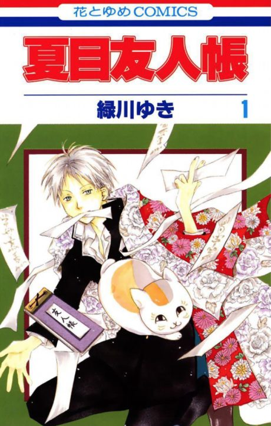
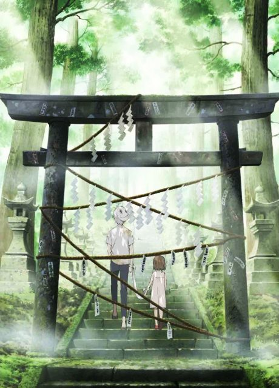
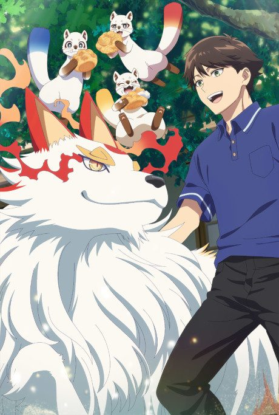
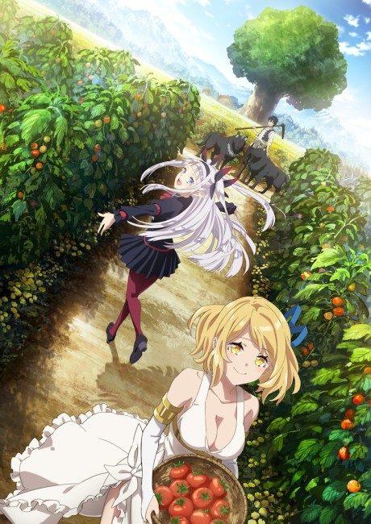
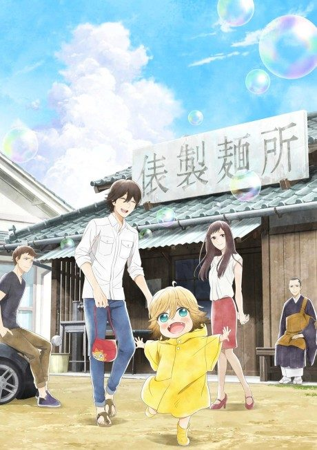
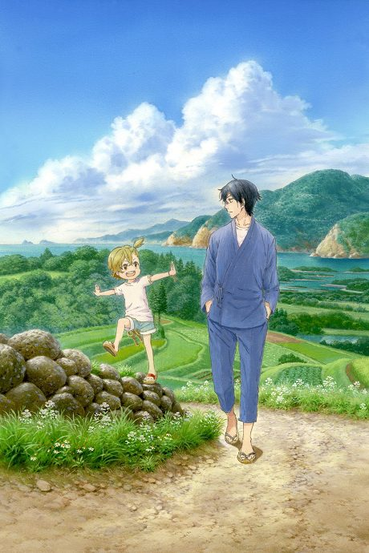

Anime

Manga2008 · Drama, Fantasy, Slice of Life
Natsume's Book of Friends Season 1
夏目友人帳
AniList8.0
Animeter—
7 seasons86 ep
MangaCh. 109
Is it worth pushing through?
Built from what visitors report across all 7 seasons (86 episodes).
Loading reports…Checking what other people said about this one.
Sign in with your email at the top of the page to add your report.
More like Natsume's Book of Friends Season 1




